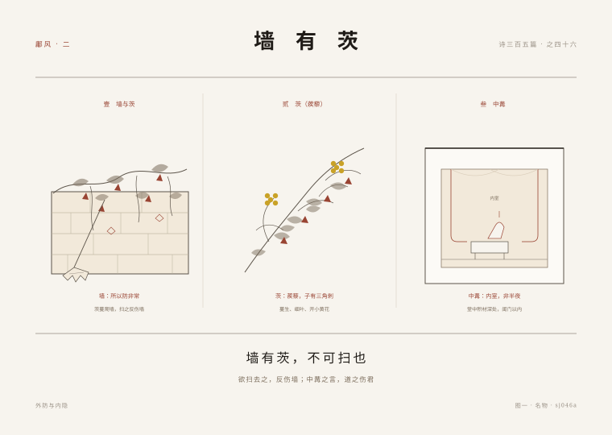
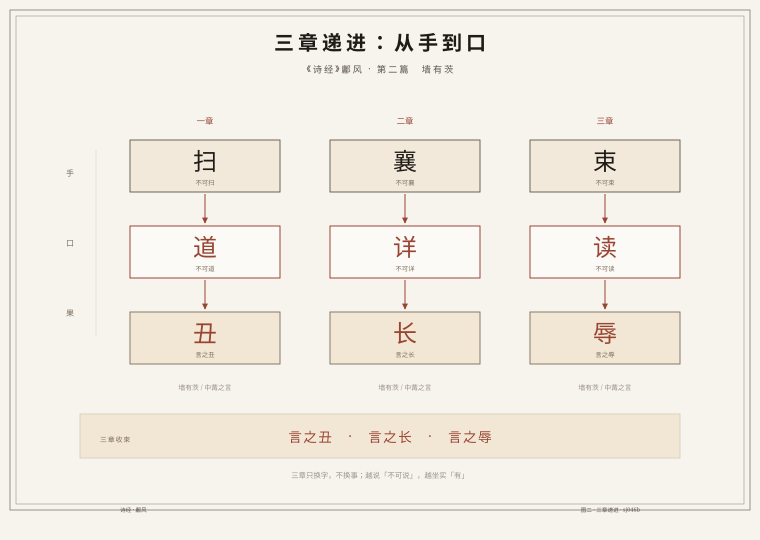

第四十六篇 墙有茨
鄘风 · 之二 SJ046
朗读 · 普通话
依经文正文朗读，句读从文；不配乐、不改速、不加拖腔。全库同一音色（豆包 TTS），非播音员录制。
一 解题
诗三判：
- 谁在说：一个知道卫宫内情、又不敢直说的国人。他反复说「不可道」，却把「有」坐实了。
- 说什么事：墙上有蒺藜，扫它反伤墙；内室里的那些话，不能说；若要说，说出来就是丑、就是长、就是辱。
- 为何编在此：此篇紧接《柏舟》。前篇女子以死守誓，此篇国人以讳守君；一守己，一讳君；一明，一暗。鄘风开卷，先把「守」与「讳」并置。
《毛序》：「《墙有茨》，卫人刺其上也。公子顽通乎君母，国人疾之而不可道也。」
朱子《诗集传》：引旧说——宣公卒，惠公幼，其庶兄顽烝于宣姜，诗人作此以刺；谓「其闺中之事皆丑恶而不可言」，末云「理或然也」。
本库的看法：诗文本只给墙、茨、中冓、不可道，不给姓名。
旧说把「中冓之言」坐成公子顽与宣姜；本库不废旧说，但正文只读「知而不言，言则伤」。墙茨扫之伤墙，中冓道之伤君；三个「不可」不是不知道，是不忍、不敢、也不值得说。至于所说为何事，诗不说；越不说，越见其丑。
二 经文
第一章
牆有茨，不可埽也。中冓之言，不可道也。所可道也，言之醜也。
第二章
牆有茨，不可襄也。中冓之言，不可詳也。所可詳也，言之長也。
第三章
牆有茨，不可束也。中冓之言，不可讀也。所可讀也，言之辱也。
分章：毛传、朱子皆三章，章六句。三章只换三个动作、三个结果；「墙有茨」与「中冓之言」两案并起，末二句转出「若说便丑」。
三 韵读
| 一 |
埽、道、醜 |
幽部 |
| 二 |
襄、詳、長 |
阳部 |
| 三 |
束、讀、辱 |
屋部 |
三章各叶一韵：一章幽部，低回而沉；二章阳部，声张开而长；三章屋部，入声短促，收在「辱」上。三章不换韵法，只换韵部；一章比一章逼紧。
四 字义与名物
字义
- 茨（cí）——蒺藜。蔓生，细叶，子有三角刺。不是茅茨、杂草的泛称。
- 埽（sǎo）——同「扫」，扫除。
- 中冓（gòu）——内室，宫中深密处。冓，交积材；室以材构，故室内称内冓。一说「中夜」，见《韩诗》。
- 道——说。
- 所——若，假设之辞。「所可道也」，即「若要说的话」。
- 醜——丑恶；于君为丑。
- 襄——除。
- 詳——详说、审说；一说通「扬」，传扬。
- 長——说来话长；一说长久之羞。
- 束——捆聚而除去；一说约束。
- 讀——抽、出；一说诵读。毛传训「抽」，郑笺申为「抽犹出也」。
- 辱——耻辱。
名物
- 墙——所以防非常。墙上有茨，本是护卫之象；要扫去茨，反伤墙身。
- 茨——蒺藜，蔓生墙上，子有三角刺；手触则刺，扫之则伤墙。诗中「不可扫、不可襄、不可束」三辞，都落在这一层刺上。
- 中冓——内室。不是「半夜」，是堂内积材深处、闺门以内。诗由此转入「言」：墙是外防，中冓是内隐。
五 今译
第一章
墙上生着蒺藜，不能扫。内室里的那些话，不能说。若要说，说出来就是丑。
第二章
墙上生着蒺藜，不能除。内室的话，不能详说。若要详说，说来就长。
第三章
墙上生着蒺藜，不能捆走。内室的话，不能抽出来诵。若抽出来，说来就是辱。
译注：「茨」译蒺藜；「埽」译扫；「中冓」译内室；「所」译若；「襄」译除；「详」译详说；「束」译捆走；「读」译抽出来诵；「丑、长、辱」依次译丑、长、辱。
六 章旨
一章：扫不去，说不得；一说便丑。墙与中冓并起，外防与内隐同构。
二章：除不尽，详不得；一详便长。动作由扫到除，话由道到详；越往下说，牵蔓越长。
三章：束不走，读不得；一读便辱。动作收到捆束，话收到抽出；最后落在「辱」字。
三章合看：只换字，不换事。
诗把「不可说」说了三遍，反而把「有」坐实；它不揭露细节，只把「不可说」本身写成一道墙。
七 诗教
- 兴：以「墙有茨」起兴。蒺藜附墙，扫之伤墙；引出「中冓之言，道之伤君」。兴在物，赋在言；前两句是兴，后四句是赋。
- 观：可观一个「讳」字。有些事不是无人知道，而是知道的人不能说；说出来，伤君、伤国、伤家。诗不把讳当美德，也不把揭私当勇敢；它只呈现讳的代价。
- 群：可与在家丑、国丑之间不能言的人同群。诗替他们把「不可说」说出来，却不替他们指名；这是同群的分寸。
- 怨：怨而不指。三章没有一声詈骂，没有一个人名；怨只在「不可」二字里，最后落到「辱」上。怨到极处，仍不说破。
八 分寸与边界
- 不可把「墙有茨」解作墙上杂草、装饰。茨是蒺藜，有刺；扫之反伤墙，是本诗起兴的关节。
- 不可把「中冓」只解作「半夜」。《韩诗》有此一说，毛郑皆以室内立说；正文从内室。
- 不可把「不可道」解作「不知道」。知道而不说、不忍说、不敢说，才是「讳」。
- 不可把「所可道也」解作「可以随便说」。「所」作「若」，是假设之辞；一说便转入「丑」。
- 不可把三章看成简单重复。扫、襄、束是手的三个动作；道、详、读是口的三个动作；丑、长、辱是三个结果，层层逼紧。
九 存疑
- 诗旨与旧说：毛序主公子顽通君母；朱子引旧说，谓「理或然也」。今人或以为泛刺卫宫淫乱，或以为「家丑不可外扬」之叹。本库正文取「知而不言，言则伤」，旧说两存。
- 文字异文：「埽」今通行本多作「扫」；「冓」，《释文》「本又作遘」；「详」一说通「扬」；「读」毛传训「抽」，朱子训「诵」。字未改，训有异。
- 名物歧解：「茨」毛传为蒺藜；「茨」本亦可训茅茨，但此诗从蒺藜。「中冓」毛郑为内室，《韩诗》为中夜；本库从内室。
- 年代与作者：诗无作者，旧说系卫人刺上。若依《左传·闵公二年》，事在卫惠公初年，约当前八世纪末至前七世纪初；诗未必即成于其时。
- 编次之疑：为何次《柏舟》？旧说以「守义」与「刺淫」对起；但《鄘风》篇次未必有严密义例，也可能只是同属卫宫事而类聚。存其说，不强作解。
十 跨典
- 《鄘风·柏舟》：前篇女子以死守己，此篇国人以讳守君；一明誓，一暗讳。两篇相接，是鄘风开卷的「守」与「讳」。
- 《邶风·新台》：卫宣公纳宣姜，新台之耻；此篇写事成之后的讳。一在事前，一在事后；一以「籧篨」讥，一以「不可道」隐。
- 《鄘风·君子偕老》：同写宣姜，彼篇以容见，此篇以讳见；「子之不淑，云如之何」与「言之丑也」可对读。
- 《陈风·株林》：陈灵公从夏南，以「胡为乎株林」微露；此篇以「不可道」微露。一以问，一以讳，皆不直书其事。
- 《左传·闵公二年》：齐人使昭伯（公子顽）烝于宣姜，不可，强之；与毛序「公子顽通乎君母」的主动语微异。旧说本事，当两存。
- 《礼记·曲礼上》：「公庭不言妇女。」中冓之言属内，公庭属外；此篇的「不可道」，正踩在这条礼的边界上。
十一 双卡与图
双卡五对：
| 茨（蒺藜，有刺） |
杂草、茅茨（泛称） |
| 中冓（内室） |
半夜（韩诗一说） |
| 不可道（知而不言） |
不知道（误读） |
| 所可道（若说） |
可以随便说（误读） |
| 言之丑（君之耻） |
只是丑话（窄化） |

图一 · 墙、茨、中冓 名物图

图二 · 三章递进：从手到口 义理图
读图三处：
- 墙与茨：图一左格画墙、蒺藜、扫帚；茨蔓爬墙，刺在叶下，扫帚不敢下；写「欲扫去之，反伤墙」。
- 中冓：右格画内室门帘、席与灯，不画床笫；「中冓」是内室，不是半夜。
- 三章递进：图二三列，分别列「扫—道—丑」「襄—详—长」「束—读—辱」；箭头由手到口、由口到结果，三章不是重复，是逐章逼紧。